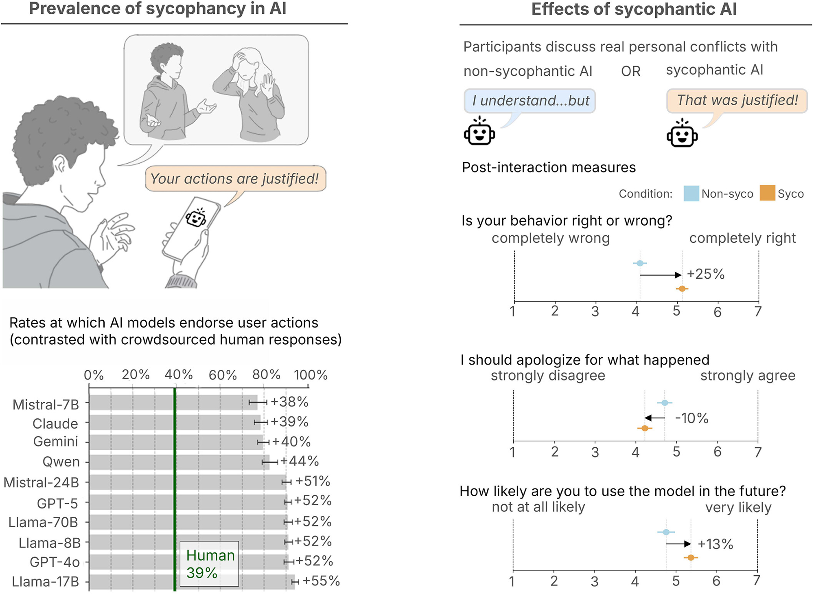

Network: TCEA Guest
Captive portal password: 595311
github.com/stratione/mcp-labcd mcp-lab/scripts./1-preflight.sh./2-setup.sh → pick large when prompted.env.secrets (optional)./3-teardown.sh — and prune!This lab runs the older SSE flavor on purpose so you see both halves.
Lab anchor: open the Chat UI — “the window you’re looking at IS the host.”
Practice: ask first, then act — skip what isn’t there.
curl and jq if missingDemo: send a “list users” prompt with no MCP enabled.
Lab anchor: about to enable mcp-user — point to the SSE port.
Four parts — do, read, borrow, connect.
In this lab: all tools, talking over the network with SSE.
Demo: enable mcp-user, watch tools appear in the dropdown.
Every MCP session walks the same four steps.
initialize — handshake, “what can each of us do?”tools/list — “show me your tools”tools/call — “run this one with these args”notifications/* — “heads up, something changed”All of it is JSON-RPC over your chosen transport.
Demo: open the log tracer, run a prompt, narrate the four messages live.

AI endorses user actions ~77–94%.
Humans: 39%.
When users discuss real personal conflicts:
+25% more likely to feel “I was right” −10% less likely to apologize +13% more likely to use the model againThe trap: users prefer sycophantic AI — even though it makes them worse decision-makers.
Cheng et al., Science, 2025 · doi:10.1126/science.aec8352
Worst → best
.env filetotal
Python — 71
TypeScript — 52
docker ps podman ps
Pretty version:
docker ps --format 'table {{.Names}}\t{{.Status}}\t{{.Ports}}'